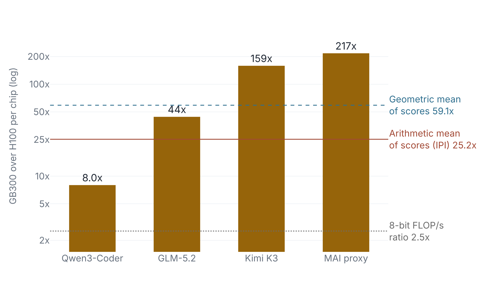
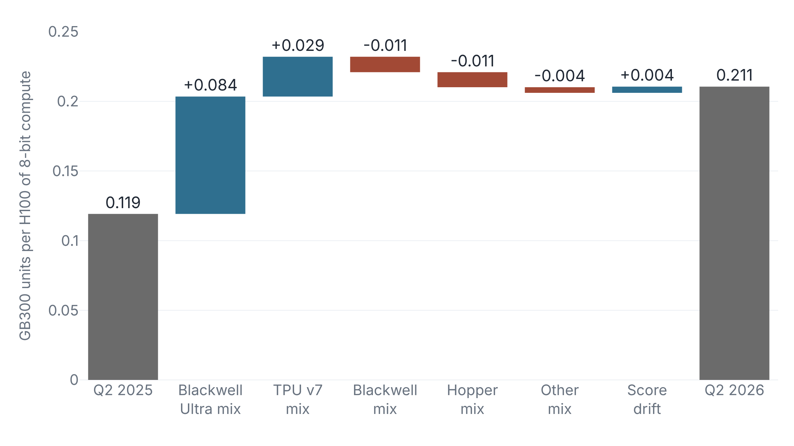

Epoch averages GB300 leads of 8× to 217× over the H100 into 25×
Jason Li, who built Epoch's inference index, has matched it to measured throughput for one model on a GB300 and published no such check for an H100.
Concurrency at a set speed, averaged over four models
Epoch AI's Inference Performance Index (IPI), by Jason Li, says an Nvidia GB300 delivers about 25 times an H100's inference capacity per chip on agentic workloads, with only 2.5 times the 8-bit FLOP/s.1 Recomputed from Li's per-model scores, the GB300's lead runs from 8× on one of the index's four models to 217× on another, so FLOP/s undercount it on all four.2 The 25 is one way to average those four ratios. A geometric mean of the same scores gives 59. Li's check of the index against measured throughput has no H100 in it.3
For each chip and model, Nvidia's AISimulate gives the highest concurrency per chip at every required output speed from 50 to 400 tokens per second per request, with 262,144 cached tokens of context and prefill chips provisioned to keep up.1 The result is a speed-of-light estimate, with no discount for software.4 Concurrency falls as the required speed rises. The curve's area on a log speed axis, divided by the GB300's area for the same model, is the score, and the IPI is the plain average of four scores.1
A harmonic mean of four ratios
The H100's scores are 0.125 on Qwen3-Coder 480B, 0.023 on GLM-5.2, 0.006 on Kimi K3 and 0.005 on a proxy for MAI-Base-2.2 Their mean is 0.0397, and one divided by that is the 25. Averaging scores with the GB300 in the denominator is the same as taking the harmonic mean of the GB300-to-H100 ratios, here 8.0, 44, 159 and 217. A harmonic mean stays near its smallest member, which is Qwen's.

In a footnote, Epoch's report says an arithmetic mean "preserves a chip's contribution on models it serves well," while a geometric mean "penalizes uneven performance more strongly, substantially lowering Hopper's scores," in exchange for comparisons that do not depend on the reference chip.1 Across Li's 28 named scenarios, leaving aside those that keep one model or one speed, the ratio runs from 19.5 with the proxy left out to 89.5 with Qwen left out.2 The published 25 sits near the bottom of that range.
Li matched GB300 Kimi K3 throughput from SemiAnalysis's InferenceX benchmark to within 11.6 percent over five points, but only after halving the modelled throughput. At undiscounted speed-of-light the gap is 256.3 percent, and other chip and model pairs differ by 40 to 344 percent.3 The validation has no H100 row, and Li writes that 12 percent is "not a universal 12% error bar on the index." He lists a check on Qwen, which supplies 79 percent of the H100's score, as work still to do.3 On DeepSeek R1 at 8k input and 1k output tokens in FP8, InferenceX measured the GB300 at 11.8, 25.5 and 35.9 times an H100 per chip at 45, 71 and 97 tokens per second per user.6 Epoch's 25 falls inside that range, and the target speed moves the ratio threefold.
13.6× from the chip, 1.85× from the rack
On Epoch's scores the 25 factors into two steps. An H100 to a B300 in an eight-GPU HGX node is 13.6×. The same GPU in a 72-GPU GB300 NVL72 rack adds 1.85×, which the report credits to the larger scale-up domain.12
| Step | Index | FP8 FLOP/s | HBM bandwidth | HBM capacity |
|---|---|---|---|---|
| H100 to B300 HGX | 13.6× | 2.27× | 2.31× | 3.6× |
| B300 HGX to GB300 NVL72 | 1.85× | 1.11× | 1.03× | 1.0× |
In the first step the datasheet ratios run from 2.3 to 3.6 and the index credits 13.6. Epoch does not attribute the difference, and none of these sources separates bandwidth from capacity from number format. SemiAnalysis reports "up to" 100× for the GB300 in FP4 and 65× in FP8, both against an FP8 H100, so FP4 adds about 1.5× if both maxima come from one operating point.7 The index models the H100, H200 and TPU v7 in FP8 and requests FP4 or an FP4 proxy for its other 20 profiles, and Epoch says it has not established that the precisions preserve equal model quality.81
The capacity series tracks what was bought
Epoch's Data Insight of 18 November applies the scores to chips sold to date. Capacity in index units grew 4.6× between Q2 2025 and Q2 2026, against 2.6× for peak 8-bit compute.9 Both reproduce from the published CSV at 4.58× and 2.59×, and their ratio is the 77 percent rise in capacity per unit of compute.10 The index fixes each chip's score, so no chip in the series gets faster: Blackwell Ultra carries 0.323 GB300 units per H100 of FP8 compute in every quarter. What changes is the stock. Blackwell Ultra went from 4.5 to 30.6 percent of peak compute, Google's TPU v7 from zero to 9.0, and Hopper fell from 34.1 to 13.7.10

Split by family, 95 percent of the rise from 0.119 to 0.211 is mix and 5 percent is score drift inside families that pool several chips. Holding every family at its Q2 2025 score under the Q2 2026 mix gives 4.50× where the series has 4.58×.10 The Data Insight stresses Blackwell and Blackwell Ultra, 74 percent of added capacity.9 TPU v7 is 17.4 percent of it, about what Blackwell B200 and GB200 add together.10
The 4.6× therefore measures which chips were bought, scored by the index. Its 4.2 to 5.1× interval covers shipments and hardware mix only.9 Li assigns the scores themselves no confidence interval.8
Sources
- Epoch AI · Inference Performance Index (9 November 2026)
- Jason Li · IPI methodology sensitivity study
- Jason Li · IPI against InferenceX observations
- Epoch AI · IPI version 1 documentation
- Epoch AI · Machine Learning Hardware database
- SemiAnalysis · InferenceX, DeepSeek R1 GB300 vs H100
- SemiAnalysis · InferenceX v2 (16 February 2026)
- Jason Li · IPI v1 methodology
- Epoch AI · Agentic inference capacity growth (18 November 2026)
- Epoch AI · Capacity by chip family, quarterly (CSV)